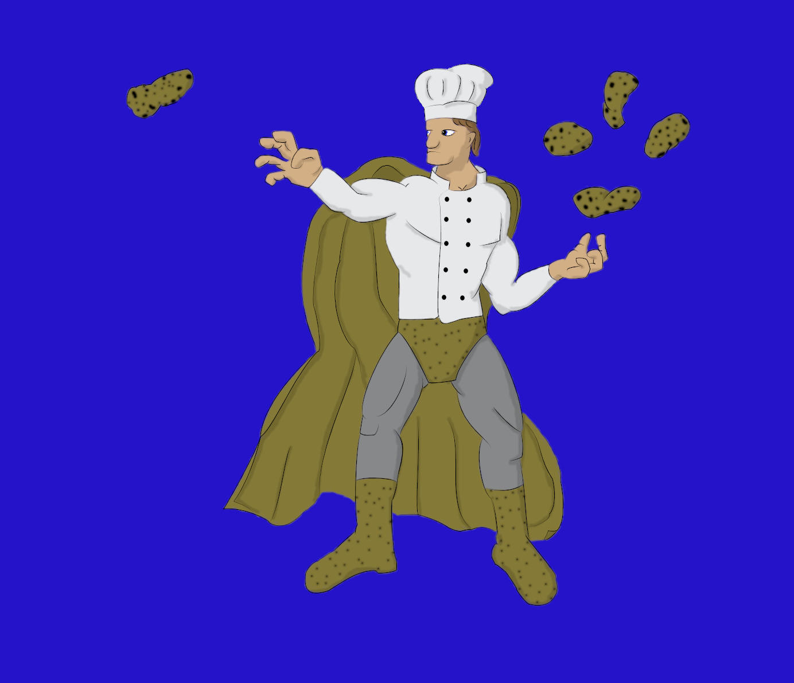

Tuberkinesis© 2019
When Dalton sought the Dark Powers, tuberkinesis hadn’t been his first choice... or even his last. He hadn’t even known it was a choice. But the Powers granted whatever abilities they saw fit, so Dalton got the ability to control potatoes with his mind.
It was a lot more useful than he had first expected. Flying potatoes weren’t the most powerful weapon, but they were ubiquitous. Dalton used them to overwhelm opponents and intimidate peons. And that was only the basic level of his ability. Dalton had recently discovered that he could spy on anyone within two miles if they were near a potato.
Up to now, Dalton was, as one of the Powers had put it, “small potatoes,” but if things worked out today, that would change. He was preparing for a showdown with Fleur Gagne, a woman who had been granted her own ability by the Powers – the ability to gift intelligence to plants. If he could force her to do his bidding, world domination would shift from a pipe dream to a feasible goal. First step would be to get through her garden. Obviously, he would start with the potato patch.